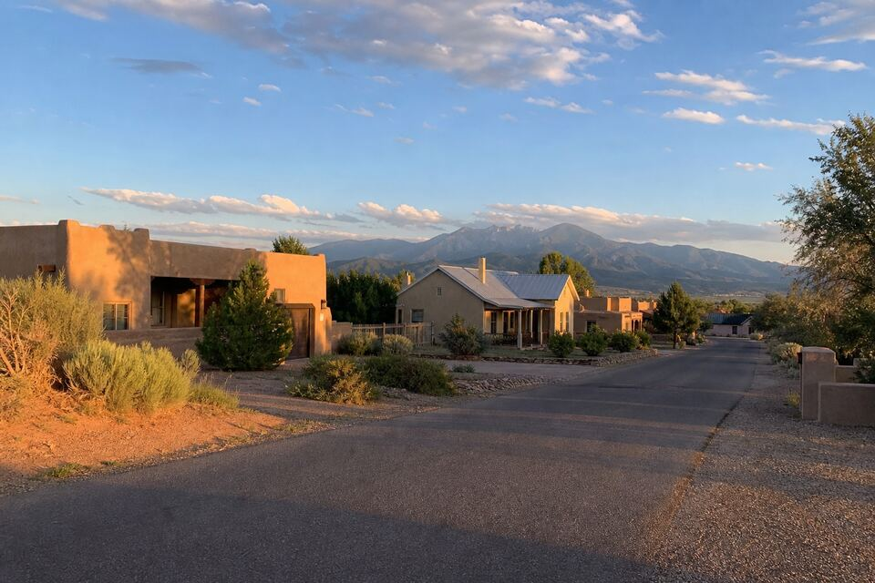

Stucco Service Areas
Santa Fe Stucco Repair works Santa Fe and the country around it — the city, the subdivisions, the Hill, and the valley. Every area below gets the same lineup: repair, re-stucco, new installation, and parapet work, priced after a look at the actual walls. Near the map but not on it? Ask — the working map is Northern New Mexico, not a city-limits line.

The coverage area, plainly
The core runs from Santa Fe proper out to Eldorado and the 285 corridor, west to Las Campanas, north through Tesuque toward the valley and Española, and up the Hill to Los Alamos and White Rock. Pojoaque, Nambé, Chimayó, La Cienega, Lamy, Cerrillos, Madrid, and Glorieta sit on the same routes and come up regularly.
Why each area has its own page
Walls age locally. Eldorado’s same-era subdivision finishes hit their recoat season together; Las Campanas customs demand repairs that disappear into designer finishes; Tesuque’s real adobes live or die by breathable plaster; Los Alamos runs the harshest freeze-thaw schedule in the region; and the Española Valley carries generational adobe and its own plaster traditions. Each page covers the pattern that actually drives calls there — useful context before the visit, never required reading.
Same standards at every address
Wherever the wall stands, the work runs the same: material identified before anything is proposed, water problems fixed before stucco covers them, repairs cut back to sound material, and the cost factors itemized after a look — not guessed over the phone. Pre-winter crack and parapet sealing gets seasonal priority everywhere on this map.
On the map, or just off its edge?
Send the form with your community and what the wall is doing — straight answer either way, and the routes run wider than the page titles.
Questions people ask
My community isn't listed. Covered?
If it borders the map — Pojoaque, Nambé, Chimayó, Lamy, Cerrillos, Madrid, Glorieta, La Cienega — very likely yes. Send the form with your area for a straight answer.
Does pricing change by area?
The wall sets the price, not the zip code — scope, condition, access, and material system. Distance only shows up in scheduling, and the cost guide covers the real factors.
Why do the area pages describe different problems?
Because construction eras and settings differ: subdivision finishes age in unison, adobes need breathable plaster, the Hill runs harder winters. The pages describe what the visits actually find.